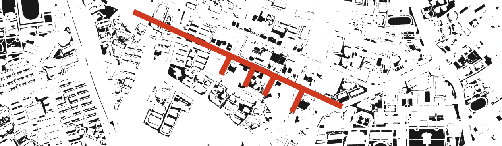
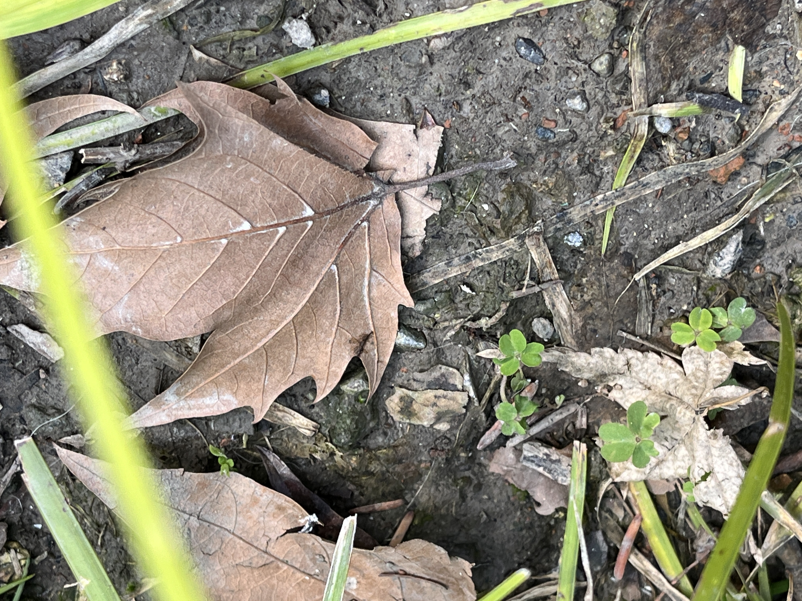
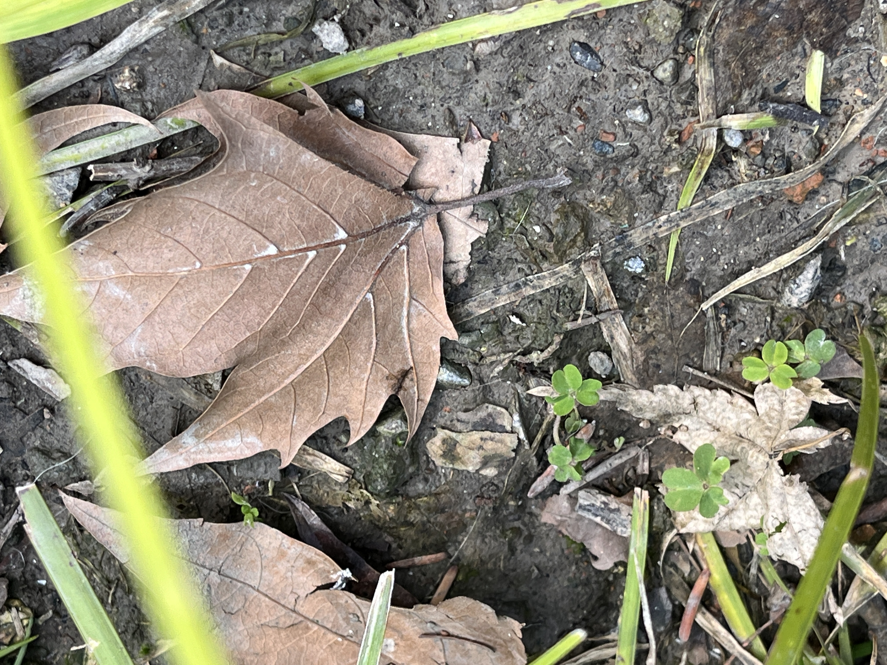
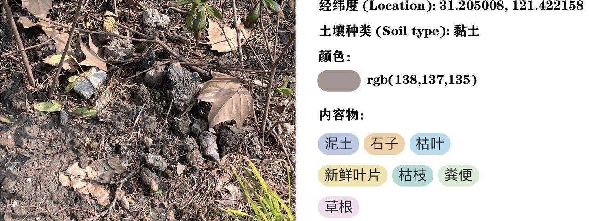
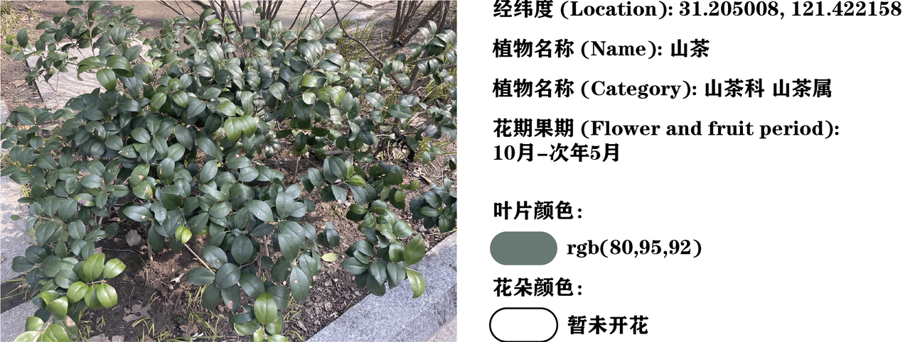
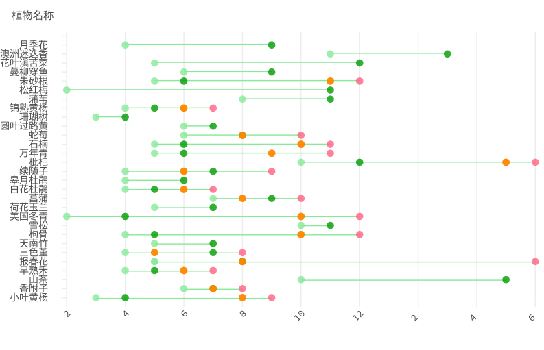

THE STORY OF THE STORY
灵感 Inspirtion
我们的故事起始于3月的一个清晨。在仍带有丝丝寒风，万物却已开始悄然复苏的早春，我们来到了新华社区。被漫入眼帘的美丽所吸引，我们产生了一个灵感：是否可以创作一幅新华街的“视觉地图”，解读新华街的视觉元素？经过范围的缩小，我们将范围缩小到了自然生态的视觉。我们看见了美丽的植物，同时，我们也关注到了植物脚下的土壤，他们同样拥有丰富的组成。植物和土壤的组合，会带来什么样的故事呢？
Our story began on a crisp morning in March. In the early spring when a slight chill
still lingered but nature was quietly reviving, we came to the Xinhua community. Captivated by the beauty around
us, we had an inspiration: could we create a "visual map" of Xinhua Street, interpreting its visual elements?
After narrowing our scope, we focused specifically on the visual aspect of the natural ecology. We noticed
beautiful plants, yet also paid attention to the soil beneath them, recognizing its rich composition. What kind
of story might the combination of plants and soil tell?
寻找数据 Find our data
我们在新华街上漫步，收集相关的数据。我们的活动范围如下图所示。
As we strolled along Xinhua Street, we collected relevant data. Our area of activity
is shown in the image below.

由于我们以视觉为主题，所以主要通过拍照的手段获得数据。我们在新华街的街道上寻找不同的植物，并拍摄植物下方形态各异的土壤。
Since our theme was focused on visuals, we primarily obtained data through
photography. We searched for different plants along the streets of Xinhua Street and took photos of the varied
shapes and forms of the soil beneath the plants.
 

分析数据 Analyze our data
我们将对收集来的图片进行了配对以及对图片进行分析，提取里面的有效信息。
We paired the collected photos and analyzed them, extracting the relevant
information within them.
对于土壤，我们确定了土壤的种类，用吸管吸取了土壤的颜色，以及编码了土壤中的内容物。
As for the soil, we identified the types of soil, extracted soil color samples, and
coded the contents found within the soil samples.

对于植物，我们确定了植物的名称，并查询了植物的科属种和花期果期。同时，我们也吸取了植物中叶子的颜色和花的颜色，并分析了植物的叶形和叶序。
For the plants, we identified their names and looked up their taxonomic families,
genera, species, as well as their flowering and fruiting periods. Additionally, we extracted color samples from
the leaves and flowers, and analyzed the shapes and arrangements of the leaves.

可视化数据 Visualization
首先，我们利用经纬度制作了一张“地图”散点图，并对各个不同的数据维度都进行了统计，想要查看不同种类的植物和土壤在新华路上的分布。
First, we created a "map" scatter plot using latitude and longitude coordinates, and
performed statistical analysis on the various different data dimensions, aiming to examine the distribution of
different types of plants and soil along Xinhua Road.
植物分布图
Plant Distribution Map
我们也制作了植物的种类图，观察在新华社区植物类型的总体情况。
We also created a chart showing the varieties of plants, in order to observe the
overall situation of plant types in the Xinhua community.
植物种类图
Plant Species Diagram
我们同样统计了植物的叶形和叶序的数量，制作了柱状图和条形图，研究公路植物种植的偏好，发现椭圆形叶片和对生关系的植物最多。
Similarly, we counted the numbers of leaf shapes and leaf arrangements, creating bar
charts and histograms to study the preferences for planting vegetation along the roadside. We discovered that
plants with elliptical leaves and opposite leaf arrangements were the most common.
植物叶片形状图
Leaf Shape Diagram
植物叶序图
Leaf Arrangement Diagram
为了能够得知全年新华街植物的开花结果规律，了解各个月份的新华街可能是什么样，我们也制作了植物生长的时序图，预测每个月植物开花结果的情况。
In order to understand the patterns of flowering and fruiting for plants along
Xinhua Street throughout the year, and envision what Xinhua Street might look like in each month, we also
created a time-series visualization of plant growth, predicting the flowering and fruiting situations of the
plants month by month.
植物生长时序图
Plant Growth Timeline Chart

对于土壤，我们研究了不同土的种类和植物形态的关系，以及土壤中内容物的比例。
For the soil, we studied the relationships between different soil types and plant
forms, as well as the proportions of the various components found within the soil samples.
植物土壤桑基图
Plant Soil Sankey Chart
土壤内容物图
Soil Content Diagram